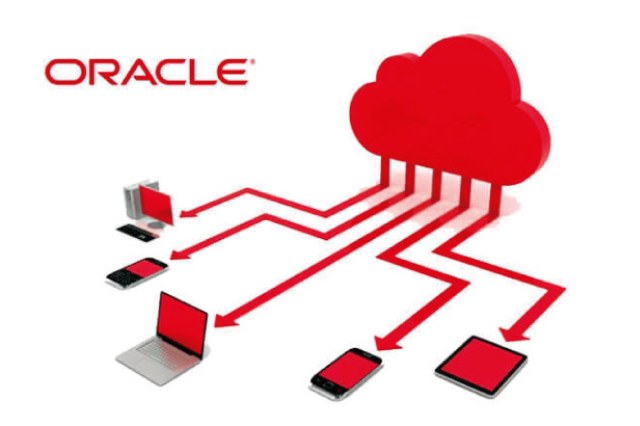

BANCO DE DADOS
Oracle
O Oracle Database é o sistema de gestão de banco de dados mais utilizado no mundo. Trabalha com a linguagem SQL, e garante a segurança e diversos recursos para seus clientes e usuários..
Leia maisBANCO DE DADOS
SQL Server

O SQL Server, criado pela Microsoft, é muito conhecido e utilizado no mercado. A linguagem usada nessa ferramenta é o T-SQL, e oferece recursos avançados e diferenciados para facilitar a atualização de dados..
Leia maisBANCO DE DADOS
MySQL

O MySQL é um banco de dados relacional que pertence à Oracle. Uma das características mais marcantes desse modelo é o fato de se tratar de um Open Source. Utiliza a linguagem SQL...
Leia maisBANCO DE DADOS
PostgreSQL

O PostgreSQL também é um gerenciador de banco de dados relacional Open Source, comumente utilizado para sistemas online, como Skype, Apple e o Metrô de São Paulo...
Leia maisBANCO DE DADOS
NoSQL
O NoSQL é um sistema de banco de dados não relacional, conforme explicado anteriormente. Hoje, esse termo é comumente utilizado por pessoas que produzem conteúdos por dispositivos, redes sociais e outros tipos..
Leia maisBANCO DE DADOS
MongoDB

O MongoDB é um dos maiores destaques do mercado. Esse banco de dados é Open Source e é um dos mais utilizados por diversas empresas. Seu sistema gira em Windows, Linux e OSX, com linguagem de programação C++...
Leia mais